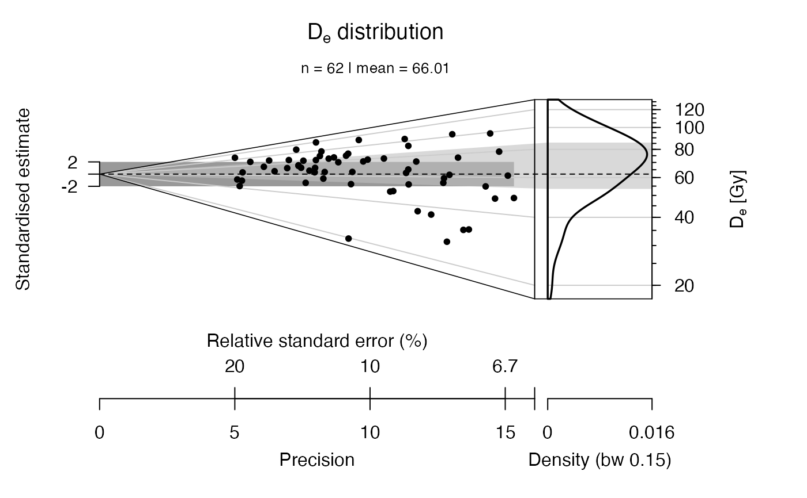
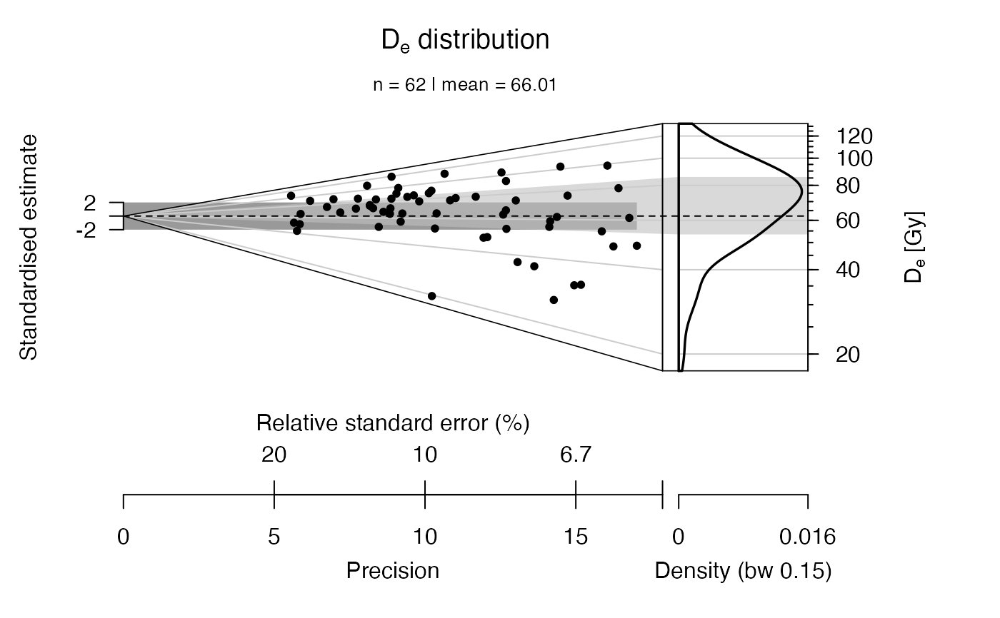

tune_Data.RdThe error can be reduced and sample size increased for specific purpose.
tune_Data(data, decrease.error = 0, increase.data = 0)
| data | data.frame (required):
input values, structure: data ( |
|---|---|
| decrease.error | numeric: factor by which the error is decreased, ranges between 0 and 1. |
| increase.data | numeric: factor by which the error is decreased, ranges between 0 and inf. |
Returns a data.frame with tuned values.
You should not use this function to improve your poor data set!
0.5.0 (2018-01-21 17:22:38)
Dietze, M. (2019). tune_Data(): Tune data for experimental purpose. Function version 0.5.0. In: Kreutzer, S., Burow, C., Dietze, M., Fuchs, M.C., Schmidt, C., Fischer, M., Friedrich, J. (2019). Luminescence: Comprehensive Luminescence Dating Data Analysis. R package version 0.9.0.104. https://CRAN.R-project.org/package=Luminescence
## load example data set data(ExampleData.DeValues, envir = environment()) x <- ExampleData.DeValues$CA1 ## plot original data plot_AbanicoPlot(data = x, summary = c("n", "mean"))## decrease error by 10 % plot_AbanicoPlot(data = tune_Data(x, decrease.error = 0.1), summary = c("n", "mean"))#> Warning: Dear kreutzer, these activities on your Darwin machine have been tracked and will be submitted to the R.Lum data base. Cheating does not pay off! [2019-04-19 18:30:23]## increase sample size by 200 % #plot_AbanicoPlot(data = tune_Data(x, increase.data = 2) , # summary = c("n", "mean"))